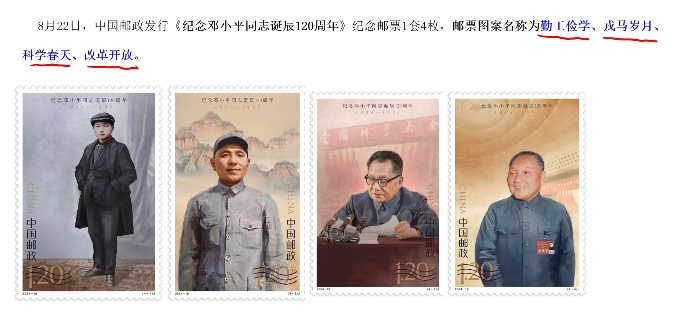

专题一
专题一
专题一
专题一
专题一
专题一
专题一
在庆祝中国人民政治协商会议成立75周年大会上的讲话
1 1949年9月，中国人民政治协商会议第一届全体会议召开。
标志着中国共产党领导的多党合作和政治协商制度正式确立
2 人民政协始终坚持团结和民主两大主体
3 3个理论：马克思列宁主义统一战线理论、政党理论、民主政治理论
4 三大职能：政治协商、民主监督、参政议政
5 性质：最广泛的爱国统一战线组织，坚持正确处理一致性和多样性的关系（求同存异）
6 不断巩固和发展生动活泼、安定团结的政治局面
7 十条规律性认识：（出多选全选机率高）
7.1 坚持发挥人民政协作为专门协商机构的作用
7.2 加持把加强思想政治引领、广泛凝聚共识作为中心环节
7.3 坚持以改革创新精神推进履职能力建设
8 协商民主是全过程人民民主的主要组成部分，是我国社会主义民主政治的特有形式和独特优势，是党的群众路线是政治领域的重要体现
9 始终坚持正确政治方向：坚持党的全面领导，坚定不移走中国特色社会主义政治发展道路，全面贯彻发展全过程人民民主的要求
10 全过程人民民主坚持4个统一：过程民主和成果民主统一、程序民主和实质民主统一、直接民主和间接民主的统一、人民民主和国家意志的统一
11 统筹完善协商民主体系：政党协商、人大协商、政府协商、政协协商、人民团体协商、基层协商、社会组织协商。都有人民参与
12 坚持3个方面：党的领导、统一战线、协商民主
13 如何发挥好政协的作用：
13.1：坚持和发展中国特色社会主义是巩固的主轴，新时代中国特色社会主义思想是统揽政协工作的总纲
13.2 紧紧围绕推进中国式现代化议政建言
13.2 着力画好强国建设、民族复兴的最大同心圆
专题二
关于加强耕地保护提升耕地质量完善占补平衡的意见
1. 耕地是粮食生产的命根子
2. 两藏战略：藏粮于地、藏粮于技
3. 三位一体：数量、质量、生态
4. 真正把永久基本农田建成高标准农田
5. 基本农田：重要农产品生产基地、高标准农田、蔬菜生产基地、农业科研、教学实验田、国务院规定（一般应当占本行政区域内耕地的80%以上）
6. 严格落实耕地占补3个平衡：数量平衡、质量平衡、产能平衡
7. 全国耕地保有量不低于18.65亿亩，永久基本农田保护面积不低于15.46亿亩，逐步把永久基本农田建成适宜耕作、旱涝保收、高产稳产的现代化良田
8. 全面落实耕地保护是党政同责
9. 优先把东北黑土地区、平原地区、具备水利灌溉条件地区的耕地建成高标准农田
10. 中央统筹、省负总责、市县抓落实、群众参与机制
11. 坚持以种适地、以地适种相结合
12. 每5年开展耕地质量综合评价
13. 建立全国家、省、市、县4级耕地质量监测网络体系
14. 补充耕地坚持以恢复优质耕地为主、新开垦耕地为辅的原则；自然保护地、生态保护红线内禁止新开垦耕地，斜坡25度以上不作为补充耕地来源
15. 坚持以补后占
专题三
在全国民族团结进步表彰大会上的讲话
1. 开创了发展各民主平等团结互助和谐关系的新局面
2. 鲜明的提出把筑牢中华民族共同体意识作为新时代党的民族工作主线、民族地区各项工作的主线
2.1 统筹推进各领域各方面改革开放：坚持以制度建设为主线
2.2 建设现代化经济体系：坚持以供给侧结构性改革为主线
2.3 中国特色大国外交：坚持以服务民族复兴、促进人类进步为主线
3. 中国特色解决民族问题的道路是正确的3点原因
3.1 着眼中华民族根本利益和整体利益（民族整体）
3.2 坚持各民族一律平等（民主之间）
3.3 正确把握维护国家统一和实行民族区域自治的关系（中央和地方关系）
4. 五个共同（大概率全选）
5. 中华民族共同体的形成和发展是人心所向、大势所趋、历史必然
5.1 各民族血脉相融：历史根基
5.2 各民族信念相同：内生动力
5.3 各民族文化相通：文化基因
5.4 各民族经济相依：强大力量
5.5 各民族情感相亲：坚强纽带
6. 总结
6.1 各族人民都有一个共同家园：中国
6.2 各族人民都有一个共同身份：中华民族
6.3 各族人民都有一个共同名字：中国人
6.4 各族人民都有一个共同梦想：实现中华民族伟大复兴
7. 始终坚持党的领导。不断巩固各民族团结奋斗的共同思想政治基础
8. 五个认同：对伟大祖国、中华民族、中华文化、中国共产党、中国特色社会主义的认同
9. 四个与共：休戚与共、荣辱与共、生死与共、命运与共
10. 着力构筑中华民族共有精神家园，为推进中华民族共同体建设提供强大精神文化支撑
11. 要以社会主义核心价值观为引领
12. 五观：国家观、历史观、民族观、文化馆、宗教观
专题四
在国家勋章和国家荣誉称号颁授仪式上的讲话
1. 两大奇迹：经济快速发展、社会长期稳定
2. 全党全国各族人民学习的优秀品格：忠诚、执着、朴实
3. 三个方面：胸怀强国之志，锤炼强国之技，勇建强国之功
4. 勇建强国表现：在破解发展难题、攻克改革难关、维护社会和谐稳定上不断有所作为
5. 尊崇英雄、学习英雄、争做英雄
专题五
在庆祝中华人民共和国成立75周年招待会上的讲话
1. 两大奇迹：经济快速发展、社会长期稳定
2. 中心任务：以中国式现代化全面推进强国建设、民主复兴
3. 如何推进中国式现代化
3.1 必须坚持中国共产党领导
3.2 必须坚持中国特色社会主义道路
3.3 坚持以人民为中心
3.4 坚持走和平发展道路
4. 高举和平、发展、合作、共赢旗帜
5. 外交政策宗旨：始终坚持维护世界和平、促进共同发展
6. 外交政策内容
6.1 宗旨
6.2 基本目标：维护我国的独立主权、促进世界和平发展
6.3 基本立场：独立自主
6.4 基本准则：和平共处五项原则
7. 弘扬全人类共同价值：和平、发展、公平、正义、民主、自由
8. 倡导平等有序的世界多极化、普惠包容的经济全球化
9. 推动落实全球发展倡议、全球安全倡议、全球文明倡议
10. 南岳衡山对联：尊道而向，当到半途须努力；会心不远，要登绝顶莫辞劳
11. 五岳
11.1 东岳、泰山、山东省泰安市
11.2 中岳、松山、河南省
11.3 西岳、华山、陕西省
11.4 南岳、衡山、湖南省
11.5 北岳、恒山、山西省
专题六
月份新闻
1. 国际原子能机构大会决议:中国倡导的”原子造福全球南方“理念首次写入
2. 全国推广普通话宣传周：每年9月第三周，今年是第27届，宣传主题是”加大推普力度，筑牢强国语言基石“
3. 北斗导航卫星：在西昌卫星发射中心(北斗港，北斗卫星都在这发射)成功发射第59、60颗北斗卫星导航卫星
4. 时代楷模：杨士莪（水声科技事业）
5. 首个深水油田二次开发项目：流花11-1/4-1油田项目在珠江口盆地海域投产；亚洲第一深水导管架平台”海基二号“、亚洲首艘圆筒型浮式生产储卸油装置”海葵一号“携手上岗
6. 全球首个多模态地理科学大模型：中国科学院地理科学与资源研究所等单位正式发布”坤元“
7. 中马领导人会谈：今年是中马建交50周年暨”中马友好年“；中马关系如何发展有4个方面
7.1 做世代友好的亲密邻居
7.2 携手发展的真诚伙伴
7.3 情同手足的知心朋友
7.4 共促和平的重要力量
备注1：与我国隔海相望的6个国家：韩国、日本、文莱、马来西亚、印度尼西亚、菲律宾
备注2： 中国企业在海外承建最大单体基础设施项目：马来西亚东海岸铁路
8. 中央党校新疆民族干部培训班创办70周年：党校初心：为党育才、为党献策；将筑牢中华民族共同体意识贯穿办班全过程
9. 世界制造业大会：在安徽合肥举办，主题：智造世界·创造美好
备注3： 我国制造业增加值（GDP）连续10年位居世界首位
10. 农民丰收节：时间：秋分日；今年是第七个丰收节；主题：学用千万工程，礼赞丰收中国；千方百计推动农业增效益、农民增收入、农村增活力
11. 国际和平日：9月21日；主题：培育和平文化
12. 42.02万高斯的稳态磁场
13. 总书记借鉴探月工程嫦娥六号任务参研参试人员代表：
13.1 探月精神：追逐梦想、勇于探索、协同攻坚、合作共赢
13.2 嫦娥六号探月重要意义：人力历史上首次月球背面采用
13.3 今年嫦娥工程20周年，三阶段：无人月球探测、载人登月、建立月球基地
13.4 探月原则：平等互利、和平利用、合作共赢
14. 中国--东盟博览会：在广西南宁开幕；主题：新城惠客同发展，镶钻成冠创未来；中国连续15年保持东盟第一大贸易伙伴，东盟连续4年成为中国第一大贸易伙伴
15. 一箭八星：太原卫星发射中心使用捷龙三号运载火箭
16. 中共中央国务院关于实施就业有限战略促进高质量充分就业的意见
16.1 就业是最基本的民生；三个事关：事关人民群众切身利益、事关经济社会健康发展、事关国家长治久安
16.2 方针：劳动者自主就业、市场调节就业、政府促进就业和鼓励就业
16.3 基础：推动高质量发展
16.4 引领：实施就业优先战略
16.5 具体做法：强化就业优先政策为抓手
16.6 着力点：破解结构性就业矛盾
16.7 动力：深化就业体制机制改革
16.8 底线：不发生规模性失业风险
17. 世界计算大会：在湖南长沙举办；主题：智算万物·湘约未来--算出新质生产力
18. 总书记给中国一重产业工人代表回信：制造业是立国之本、强国之基；三个精神：劳模精神、劳动精神、工匠精神
19. 发射洲际弹道导弹：
19.1 导弹之父：钱学森
19.2 洲际弹道导弹：东风系列
19.3 射程范围：8000千米以上
20. 第三届全球数字贸易博览会：在浙江杭州举办；主题：数字贸易·商通全球
21. 力箭一号遥四商业运载火箭：在酒泉发射；首次成功进行晨昏轨道发射
22. 深海一号：我国首个深水高压气田开发项目二期工程
23. 求是文章：大力弘扬伟大爱国主义精神，把建设强国建设、民族复兴伟业不断推向前进
23.1 中国精神：以爱国精神为核心的民族精神、以改革创新为核心的时代精神
23.2 最深层、最根本、最永恒的是爱国主义
23.3 爱国主义的本质体现：只有坚持爱国和爱党、爱社会主义相统一
23.4 必须把维护祖国统一和民族团结作为重要着力点和落脚点
24. 实践十九号卫星：酒泉发射；首颗可重复使用返返回式技术试验卫星
25. 烈士纪念日：9月30；在北京天安门广场举行献花篮仪式
26. 人民英雄纪念碑：人民英雄永垂不朽；
27. 中日关系：10月1日习大大致电石破茂当选日本首相；恪守中日四个政治文件：中日联合声明、中日和平友好条约、中日联合宣言、中日关于全面推进战略互惠的联合声明；
28. 中俄领导人互致贺电：热烈庆祝两个建交75周年。苏联是第一个与中国建交的国家；两国关系最本质的特征：永久睦邻友好、全面战略协作、互利合作共赢；中俄关系：新时代全面战略协作伙伴关系
专题一
在2024年中非合作论坛北京峰会欢迎宴会上的祝酒辞
1. 概括：中共命运共同体根植于传统友好、彰显于合作共赢、壮大与与时偕行、构建命运共同体是人类的共同梦想，现代化是梦想连接现实的必由之路
2. 在峰会开幕式主旨讲话
2.1 题目：携手推进现代化，共党命运共同体
2.2 中非论坛成立时间：2000年
2.3 理念：真实亲诚
2.4 习大大提议：将中国所有非洲建交国的双边关系提升到战略关系层面，将中非关系整体定位提升至新时代全天候中非命运共同体
3. 六个现代化：、（）、（）、、、和平安全
3.1 公正合理
3.2 开发共赢：互利合作是各国长远合根本利益的阳关大道
3.3 人民至上：实现人的自由全面发展是现代化的最终目标
3.4 多元包容：实现物质文明和精神文明协调发展是现代化的崇高追求
3.5 生态友好：绿色发展是现代化的鲜明标识
3.6 和平安全
4. 未来3年携手推进现代化十大伙伴行动（全选概率高），引领全球南方现代化
4.1 中方愿在非建30个基础设施联通项目
4.2 实施1000个小而美民生项目
4.3 建设10个鲁班工坊
4.4 双方确定2026年尾中非人文交流年
专题二
在庆祝全国人民代表大会成立70周年大会上的讲话
1. 1949年，通过具有临时宪法地位的《中国人民政治协商会议共同纲领》
2. 1954年，第一届全国人民代表大会第一次会议通过《中华人民共和国宪法》；标志着人民代表大会制度这一国家根本政治制度正式建立；毛主席在会议上的开幕词：为建设一个伟大的社会主义国家而奋斗
3. 人大制度两大优势：坚持中国共产党领导、保证党领导人民依法有效治理国家
4. 三个统一：坚持党的领导、人民当家作主、依法治国有机统一
5. 三个确保：
5.1 确保党的主张通过法定程序成为国家标志
5.2 确保党组织推荐的人选通过法定程序成为国家政权机关领导人员
5.1 确保党通过国家政治机关实施对国家和社会的领导
6. 显著优势：
6.1 坚持中国共产党领导、保证党领导人民依法有效治理国家的优势；克服旧中国那种群龙无首、一盘散沙和党争纷沓、相互攻讦（jie二声）的现象
6.2 践行全过程人民民主、保障人民当家作主的优势；克服人民形式上有权、实际上无权和选举时漫天许诺、选举后无人过问的现象
6.3 贯彻民主集中制、保证国家政治生活既充满活力又安定有序的优势；克服相互掣肘、内耗严重和议而不决、决而不行的现象
6.4 保障全面依法治国、实现国家各方面工作法治化的优势；克服无法可依、有法不依和以权代法、以权压法的现象
6.5 维护国家统一、保障国家长治久安的优势；克服各自为政、尾大不掉和民族隔阂、民族冲突的现象
7. 两个结合：同中国具体实际相结合、同中华优秀传统文化相结合
8. 重大理念：强调人民代表大会制度时实现我国全过程人民民主的重要制度载体
9. 八个必须
9.1 必须坚持中国共产党领导
9.2 必须坚持勇制度体系保障人民当家作主
9.3 必须坚持全面依法治国
9.4 必须坚持民主集中制
9.5 必须坚持走中国rese社会主义政治发展道路
9.6 必须坚持推进国家治理体系和治理能力现代化
9.7 必须坚持充分发挥人大代表作用
9.8 必须坚持按照“四个机关”要求加强各级人大建设
10. 四个机关：政治机关、权力机关、工作机关、代表机关
11. 人大在立法工作的主导作用：
11.1 推进科学立法、民主立法、依法立法
11.2 必须坚持和完善党委领导、人大主导、政府依托、各方参与的立法工作格局
11.3 立法领域：重点领域、新兴领域、涉外领域
11.4 三个公平：权力公平、机会公平、规则公平
11.5 做到改革和法治相统一
11.6 发挥人大监督在党和国家监督体系种的重大作用；健全人大对“一府（政府）一委（监察委员会）两院（法院、检察院）”；用制度管住权力
11.7 人民民主是中国共产党始终高扬的光辉旗帜；民主是全人类的共同价值
专题三
中国共产党不合格党员组织处置办法
1. 第三条，通用情形：缺乏革命意志、不履行党员义务、不符合党员条件甚至丧失党员条件的党员；处置方式：限期改正、劝其退党、除名
2. 第四条，违犯党纪的党员收到党纪处分的，不因同一问题再进行组织处置（同一问题已进行党纪处分就不再组织处置）
3. 第六条，给予限期改正情形（容易改正的情况，如本人认识到错误，工作消极，不按时交纳党费，信念不坚定）
3.1 本人能够正确认识错误、愿意接受教育管理并且决心改正
3.2 信仰宗教
3.3 经批评教育仍未改正的
3.4 主要由于主观原因与党组织失去联系6个月以上、2年之内，失去联系期间无违纪违法行为
3.5 限期改正时间：6个月，最长不超过1年；期间党员权力不受影响
4. 第七条，劝其退党情形：限期改正期满后仍无转变
5. 第八条，除名情形（除名不等于开除党籍（开除是一种纪律处分），除名是取消党员资格和党籍的组织处分，第九条：除名后5年内不得重新入党）
5.1 已经丧失党员条件
5.2 进教育仍然坚持提出退党
5.3 连续6个月不参加党的组织生活，自行脱党
5.4 失去联系被停止党籍，2年后确实无法取得联系，自行脱党
5.5 收到劝其退党，本人坚持不退
6. 第十条，有第六、七、八条情形之一的，由党支部委员会提出启动组织处置意见、并报基层党委进行事前备案
6.1 组织处置程序：
6.1.1 党支部调查核实
6.1.2 党支部委员会提出拟处置意见
6.1.3 预审：限期改正则由基层党委提出，劝其退党、除名由基层党委审查后报上一级党委组织部门预审
6.1.4 形成决议：党支部召开党员大会；会议满足双过半：实际到会有表决权党员必须超过全部应到有表决权党员一半、表决数必须超过全部应到有表决权党员数一半
6.1.5 审批和宣布：限期改正则由基层党委审批，劝其退党、除名由基层党委审查后报上一级党委组织部门审批；审批处置决议和处置意见必须经过集体讨论决定
7. 第十六条，组织处置决议生效时间：自由最终审批权限的党组织永久审批之日起生效
8. 第十八条，申诉期间，不停止处置决议的执行
9. 第二十条，党员受客观条件制约，由于外部原因无法完成工作，可以不予处置
10. 第二十二条，县级及以上党委组织部门履行统筹协调和组织实施的职责；基层党委履行直接领导责任；党支部履行主体责任
专题四
求是文章：培养德智体美劳全面发展的社会主义建设者和接班人
1. 教育的首要问题：培养什么人
2. 古语：固有贤良之士众，则国家之治厚；贤良之士寡，则国家之治薄---墨子《尚贤》
3. 根本任务：培养社会主义建设者和接班人
4. 三全育人：全员有人、全过程有人、全方位育人的体制机制
5. 教育现代化方向目标或根本任务：不断培养一代又一代社会主义建设者和接班人
6. 六个方面下功夫
6.1 坚定理想信念；必须树立共产主义远大理想和中国特色社会主义共同理想
6.2 厚植爱国主义情怀；爱国主义是中华民族的民族心、民族魂；三爱主义是当代中国爱国主义精神的重要体现或爱国主义本质：爱国、爱党、爱社会主义
6.3 加强品德修养；人的根本在于立德
6.4 增长知识见识
6.5 培养奋斗精神；志不立，天下无可成之事---王阳明《教条示龙场诸生》；古之立大事者，不惟有超世之才，亦必有坚忍不拔之志---苏轼《晁（chao二声）错论》
6.6 增强综合素质；周朝官学六艺：礼、乐、射、御、书、数
7. 白日不到处，青春恰自来。苔花如米小、也学牡丹开---清代诗人袁枚
专题五
全国教育大会
1. 建成教育强国是近代以来中华民族梦寐以求的美好愿望，是实现以中国式现代化全面推进强国建设、民族复兴伟业的先到任务、坚实基础、战略支撑
2. 9月10是我国第四十个教师节；主题：大力弘扬教育家精神，加快建设教育强国；教师别称：夫子、山长、西席、太子太傅、祭酒、博士、函丈、司业
3. 强国建设、民族复兴之基：教育
4. 2035年建成教育强国的奋斗目标
5. 教育强国的性质：中国特色社会主义教育强国
6. 教育强国六力：思政引领力、人才竞争力、科技支撑力、民生保障力、社会协同力、国际影响力
7. 根本任务：立德树人、着眼于培养德智体美劳全面发展的社会主义建设者和接班人
8. 坚定马克思主义信仰、中国特色社会主义信念、中华民族伟大复兴信心
9. 不断拓展实践育人和网络育人的空间和阵地
10. 三大战略：科教兴国、人才强国、创新驱动发展
11. 以科技发展、国家战略需求为牵引
12. 构建职普融通、产教融合的职业教育体系
13. 不断提升教育公共服务的普惠性、可及性、便捷性
14. 推动义务教育优质均衡发展，逐步缩小城乡、区域、校际、群体差距
15. 实施教育家精神，提高教师三个地位：政治地位、社会地位、职业地位
专题六
中国的能源转型白皮书
1. 中国已成为世界上最大的能源生产国和消费国
2. 四个革命、一个合作：能源革命、供给革命、技术革命、体制革命、全方位加强国际合作
3. 能源转型，坚持一下理念原则
3.1 坚持绿色低碳：坚持走生态优先、绿色低碳的发展道路；把节约能源资源放在首位；以绿色低碳为导向，加快构建以非化石能源为主体的能源供给体系
3.2 坚持创新引领：创新是打开能源转型之门的金钥匙
4. 主题宣传活动：
4.1 全国生态日（8月15），主题：加快经济社会发展全面绿色转型
4.2 全国节能宣传周，主题：绿色转型、节能攻坚
4.3 全国低碳日（宣传照第三天），主题：绿色低碳、美丽中国
4.4 世界环境日（6月5），主题：全面推进美丽中国建设
5. 风电、光伏发电成为清洁能源主力军
6. 核电是优质高效的清洁能源，中国始终将核安全作为核电发展的生命线
备注：核电：华龙一号、国和一号、华能石岛湾（国家第四代核电站）
7. 加快构建以企业为主体、市场为导向、产学研用深度融合的协调创新体系
8. 全球首座十万吨级深水半潜式生产储油平台：深海一号
9. 除核电站以外的能源领域外商投资准入已全面放开
10. 2035年，中国将基本实现社会主义现代化，美丽中国目标基本实现
11. 本世界中叶：清洁低碳、安全高效的新型能源体系全面建成；非化石能源成为主体能源，支撑2060年前实现碳中和目标
专题七
全面推动黄河流域生态保护和高质量发展座谈会与甘肃考察
1. 座谈会举行地点：甘肃省兰州市
2. 战略要求：重在保护、要在治理，已进一步全面深化改革为动力
3. 因地制宜、分类施策：黄河上游，水源涵养能力；中游，水土保持；下游：湿地保护和生态治理
4. 持续完善黄河流域生态大保护大协调格局
5. 四水四定：以水定城、以水定地、以水定人、以水定产
6. 加大中下游地下水超采漏斗治理力度
7. 壮大战略性新兴产业、先进制造业集群
8. 特大城市要走内涵式发展之路
9. 发挥县城连接城市、带动乡村作用，率先在县城内实现城乡融合发展
10. 建设宜居宜业和美乡村
11. 在天水市考察全国重点文物保护单位伏羲庙
12. 乡村振兴关键在产业振兴
13. 四大石窟：麦积山石窟（甘肃天水，本次访问）--东方雕塑艺术陈列馆、莫高窟（甘肃敦煌）--规模最大最久最完好（千佛）、云冈石窟（山西大同）、洛阳石窟（河南）---中国石刻艺术的最高峰（龙门石窟）
14. 兰州市唯一一个黄河穿城而过的省会城市
15. 打造全国重要的新能源及新能源装备制造基地
16. 积极发展现代寒旱特色产业
17. 推进山水林田潮草沙一体化保护和系统治理
18. 实施好以人为本的新型城镇化战略，提高县城综合承载能力
19.建设好长城、长征、黄河国家文化公园
20. 参观了陕西宝鸡青铜器博物院（宝鸡，青铜器之乡--出青铜器最多，西周和尊（青铜器）--上面铭文“宅兹中国”，中国一词最早的文宝记载；炎帝的故里；宝鸡故称“陈仓”（韩信--明修栈道，暗度陈仓））
21. 察看了渭河生态公园（渭河--黄河最大的支流）
专题八
月份新闻
1. 农民丰收节（农历秋分），主题：学用千万工程，礼赞丰收中国；主场：河南省开封市兰考县（焦裕禄）
备注：焦裕禄精神：亲民爱民、艰苦奋斗、科学求实、迎难而上、无私奉献
2. 山河号：山东省济南市黄冈路穿黄隧道
3. 蛟龙号：5572米大深度下潜，顺利完成深海羽流絮凝实验
4. 金融教育宣传月：20204年9月
5. 以服务发展包容发展、以服务合作促进联动融通、以服务创新培育发展功能、以服务共享创造美好未来；加快推进服务贸易数字化、智能化、绿色化进程
6. 新海鲟：首艘采用LNG双燃料动力系统的大型挖泥船
7. 中国和南非领导人会谈：将中南关系提升为新时代全方位战略合作伙伴关系；三个方向：共同进步的政治方向、互利共赢的合作方向、世代友好的民意方向；彩虹之国：南非
8. 国家网络安全宣传周，主题：网络安全为人民、网络安全靠人民
9. 新增4项世界灌溉工程：新疆吐鲁番坎儿井、徽州堨（e四声）坝、陕西汉阴凤堰（yan四声）梯田、重庆秀山巨丰堰；我国世界灌溉工程已达38项
10. 新增3个世界地址遗产：乌达三叠纪植被化石产地、自贡大山铺恐龙化石群遗址、桂林咯（ka一声）斯特
11. 中坦建交60周年；坦桑尼亚市新时代中国对分政策的受倡地
12. 世界最大直径高铁盾构机--领航号
13. 2028年前后两次发射任务，实现火星样品返回地球--天文三号
14. 报送规章备案，应当提交备案报告、规章文本、说明，按格式装订，一式三份，同时报送电子文本
15. 可重复使用试验航天器（飞行268天）：酒泉发射
16. 世界农村发展日：7月16
17. 气象灾害预警：Ⅳ（一般）、Ⅲ、Ⅱ、Ⅰ（特别严重）；蓝色、黄色、橙色、红色
17.1 台风预警：蓝色（24小时平均风力6级，阵风8级）、黄色（24小时平均风力8级，阵风10级）、橙色（12小时平均风力10级，阵风12级）、红色（6小时平均风力12级，阵风14级）
17.2 暴雨预警：蓝色（12小时内降雨量50毫米）、黄色（6小时内降雨量50毫米）、橙色（3小时内降雨量50毫米）、红色（3小时内降雨量100毫米）
17.3 沙尘暴预警：黄、橙、红；符号S
17.4 高温预警：黄（连续三天最高气温35°以上）、橙（24小时内最高气温37°以上）、红（24小时内最高气温在40°以上）
17.5 干旱预警：橙、红；符号3竖折线
17.6 雷电预警：黄、橙、红；符号S
17.7 冰雹预警：橙、红；符号类似深蓝
17.8 霜冻预警：蓝、黄、橙；符号暴雪预警符号（雪花型）加凹框
17.9 大雾预警：黄、橙、红；符号三横杠
17.10 霾预警：黄、橙、红；符号无限符号
17.11 道路结冰预警：黄、橙、红；符号汽车打滑
18. 一箭10星：太原发射长征六号运载吉利星座03组卫星
19. 白露：9月7；三侯：一候鸿雁来、二候玄鸟（燕子）归、三侯群鸟养羞；全年昼夜温差最大的节气；
20. 论教育：我国已建成世界上规模最大的教育体系，教育现代化发展总体水平跨入世界中上国家行列；习大大科学回答了培养什么人、怎样培养人、为谁培养人的根本问题
21. 秦始皇兵马俑考古发掘50周年：世界第八大奇迹；陶瓷制品
22. 中挪领导人会见：建交70年；主旋律：友好和合作；坚持互相尊重、求同存异；平等有序的世界多极化、普惠包容的全球经济化
23. 2023年底、全国累计建成高标准农田超过10亿亩
24. 上海妇女论坛：上海精神：互信互利、多样协商、尊重多样文明、谋求共同发展；促进各国民相亲、心相近；山东青岛举办
25. 世界技能大赛：法国里昂举办第47届
26. 黄海一号：我国手套抗浪型漂浮式光伏平台
27. 朱雀三号：酒泉发射；可重复使用垂直回收运载火箭
28. 以强监督、防风险、促高质量发展为主线、充分发挥保险业的经济减震器和社会稳定器功能；2035年，基本形成市场体系完备、产品和服务丰富多样的保险业新格局
29. 中国--东盟博览会、商务投资峰会；广西南宁举办；主题：亲诚惠容同发展，镶钻成冠创未来
30. 2024年国际服务贸易交易会：打造市场化、法治化、国际化环境；共享机遇、共商合作、共促发展；主题：全球服务，互惠共享
31. 北京香山论坛：和平、未来
32. 国家勋章、荣誉称号：
32.1 共和国勋章：授予王永志（航天）、王振义（医疗）、李振声（小麦杂交）、黄宗德（战斗英雄）
32.2 友谊勋章：迪尔玛·罗塞芙；
32.3 国家荣誉称号：王小漠（雷达）、赵总贤（高温超导）---“人民科学家”；巴依卡·凯力迪别克---“人民卫士”； 田华---“人民艺术家”；许振超（集装箱）---“人民工匠”；张晋潘（中国史）、黄大年（地球物理）----“人民教育家”；路生梅---“人民医护工作者”
33. 渐进式延迟法定退休：自2025年1月1日施行；用15年时间，男职工原60延迟到63周岁，女职工原50、55分别延迟55、58周岁
34. 国防教育法：
34.1 第二条，以爱国主义为核心，以履行国防义务为目的
34.2 第十二条，每年9月的第三个星期六为全民国防教育日
34.3 第十三条，学校国防教育是全面国防教育的基础，是实施素质教育的重要内容
34.4 第十四条，小学具备一定的国防意识，初中掌握初步的国防知识
34.5 第十五条，高中具备基本的国防观念，大学设置国防教育课程具备较强的国防观念
34.6 第十七条，普通高等学校、高中阶段学校组织学生军事训练
35. 中国铁路营业总里程突破16万公里
36. 2024全国科普日：主题，提升全民科学素质，协力建设科技强国
37. 全国1%人口抽样调查
38. 国务院办公厅关于践行达十五观构建多元化事物供给体系的意见
38.1 形成政府引导、市场主导、社会参与的事物开发格局
38.2 2027年，大农业观、大食物观普遍树立，构建形成粮经饲统筹、农林牧渔结合、植物动物微生物（大食物观）并举的多元化事物供给体系
38.3 2035年，多元化食物供给体系全面建成
专题一
纪念邓小平同志诞辰120周年
1. 邓小平是党的第二代中央领导集权的核心，中国社会主义改革开发和现代化的总设计师，中国特色社会主义道路的开创者，邓小平理论的主要创立者
2. 领导发动百色起义（1929年，也叫右江暴动）和龙州起义（1930年），创建左右江革命根据地、开辟晋冀鲁豫抗日根据地、 跃进大别山（揭开了解放战争反抗的序幕）、组织淮海战役和渡江战役
2.1 第一个农村革命根据地：井冈山（土地革命时期，在江西省）
2.2 第一个抗日根据地：晋察冀（聂荣臻领导）
2.3 全国人民抗日中心：陕甘宁
2.4 鄂豫皖革命根据地：土地革命时期，以大别山为中心，红四方面军、红二十五军、红二十八军的诞生地
2.5 湘鄂赣革命根据地：土地革命时期
2.6 海陆丰革命根据地：土地革命时期，主要创立者--彭湃，建立中国第一个苏维埃政权（县级），最早开展土地革命
2.7 中国第一个城市苏维埃政权--广州，东方的巴黎
2.8 淮海战役：1948年，以徐州为中心；意义：解放军牺牲嘴重、歼敌数量最多、政治影响最大、战争样式最复杂
2.9 渡江战役：《七律人民解放军占领南京》（天若有情天亦老，人间正道是沧桑）
3. 和刘伯承、贺龙解放大西南，标志着国民党在大陆的统治最后的终结；参加西藏和平解放（1951年，《关于和平解放西藏办法的协议/十七条协议》）
4. 领导了伟大历史转折
5. 强调实事求是（精髓）、群众路线（根本路线）、独立自主（中国革命和建设的基本理念）是毛泽东思想的精髓
6. 确立解放思想、实事求是的思想路线（第十一届三中全会）
7. 党的十一届六中全会，正确评价毛泽东通知的历史地位和毛泽东思想的科学体系；党在指导思想上拨乱反正的胜利完成（文革后）
8. 三个历史决议：
8.1 《关于若干历史问题的决议》.1945年，六届七中全会
8.2 《关于建国以来党的若干历史问题的决议》，十一届六中全会
8.3 《关于党的百年奋斗重大成就和历史经验的决议》，2021年，十九届六中全会
9. 党的十二大，他鲜明提出“走自己的道路，建设有中国特色的社会主义“
10. 党的十三大，论述了社会主义初级阶段理论，完整概括了党在社会主义初级阶段的基本路线（一个中心，两个基本点；经济建设为中心，四项基本原则，改革开放）
11. 党的十四大，确立了经济体制改革目标：建立社会主义市场经济体制
12. 党的十五大，确立邓小平理论为党的指导思想；确定依法治国基本方针；承认非公有制经济是社会主义市场的经济重要组成部分
12.1 马克思（一大），毛泽东（七大），邓小平（十五大），三个代表（六大），科学发展观（十八大），习近平新时代中国特色思想（十九大）
13. 邓小平理论深刻回答了什么是社会主义、怎样建设社会主义这一根本问题；是中国特色社会主义理论体系的奠基之作、开篇之作
14. 明确提出：建设小康社会、科技是第一生产力（1977年恢复高考制度）、提出和平与发展是当代世界的两大问题
15. 提出一国两制，开辟了以和平实现祖国完全统一的新路径
16. 民主集中制：个人服从组织、少数服从多数、下级服从上级、全党服从中央
17. 计划和市场都是经济手段
18. 坚持物质文明和精神文明两手抓、两手都要硬（核心）；处理好改革（动力）、发展（目的）、稳定（前提）的关系
18.1 两手抓：改革开放、打击犯罪；经济建设、民主法制；改革开放、惩戒腐败
19. 全面推进中国式现代化：为中各特色社会主义失业发展打开了空间，为新时代党的理念创新提供了土壤
20. 坚持马克思主义的魂脉、中华优秀传统根脉
21. 中心任务：以中国式现代化全面推进强国建设、民族复兴伟业
22. 坚持守正创新、进一步深化改革
23. 总目标：继续完善和发展中国特色社会主义制度、推进国家治理体系和治理能力现代化；以经济体制改革为牵引
24. 三个更加注重：系统集成、突出重点、改革实践
25. 首要任务、硬道理、鲜明主题：高质量发展
26. 新四化：新型工业化、信息化、城镇化、农业现代化
27. 基础性战略性支撑：强化教育、科技、人才支撑
28. 文明发展道路：生产发展、生活富裕、生态良好
29. 坚持人民至上、扎实推进共同富裕
30. 不断健全权力公平、机会公平、规则公平的社会公平保障体系
31. 能力缩小城乡差距、地区差距、收入差距
32. 共同富裕发展目标：2035年取得实质性进展，本世纪中叶基本实现全体人民共同富裕
33. 推进高水平对外开放，维护国家主权、安全、发展利益
34. 推进全面从严治党，锻造马克思主义执政党
35. 统领、根本性、首要建设：党的政治建设
36. 不断推进党的自我净化、自我完善、自我革新、自我提高
37. 人民军队是党和国家的钢铁长城
38. 方针：一国两制、港人治港、澳人治澳、高度自治
39. 贯彻新时代党解决台湾问题的总体方略：
39.1 （统一的）根本保证：党中央对台工作的集中统一领导
39.2 历史方位：在中华民族伟大复兴的进程中推进祖国统一
39.3 战略思路：在祖国大陆发展进步的基础上来解放台湾
39.4 大政方针：和平统一、一国两制
39.5 政治基础：坚持一个中国的原则和九二共识
39.6 实践途径：两岸关系和平、融合发展
39.7 根本动力：团结台湾同胞、争取台湾民心
39.8 必然要求：粉碎台独分裂图谋
39.9 外部条件：反对外部势力干涉
39.10 战略支撑：决不承诺放弃使用武力
40. 旗帜：和平、发展、合作、共赢
41. 弘扬全人类共同价值：和平发展、公平公正、民主自由
42. 落实全球发展倡议、全球安全倡议、全球文明倡议、
43. 十八大，三个都是：践行党的初心使命、完成毛泽东邓小平等事业、在新时代坚持发展中国特色社会主义
专题二
月份新闻
1. 厦门实践：学习运用习近平生态文明思想经验
2. 求是文章，二十届三中全会
2.1 四个迫切需要：
2.1.1 凝聚人心、汇聚力量、实现新时代新征程党的中心任务
2.1.2 完善和发展中国特色社会主义制度、推进国家治理体系和治理能力现代化
2.1.3 推动高质量发展、更好适应我国社会主要矛盾变化
2.1.4 应对重大风险挑战、推动党和国家失业行稳致远
3. 中巴建交50周年
3.1 2024年建交国家年数
3.1.1 40周年：阿联酋
3.1.2 50周年：巴西、委内瑞拉、马来西亚
3.1.3 60周年：法国
3.1.4 70周年：挪威
3.1.5 75周年：匈牙利、俄罗斯
4. 2024未来科学大奖：生命科学将（邓宏魁）、物质科学奖（张涛和李亚栋）、数学与计算机科学奖（孙斌勇）
5. 国务院第五次全体会议
5.1 会议制度：
5.1.1 全体会议：总理、副总理、国务委员、各部部长、各委员主任、人民银行行长、审计长、秘书长；讨论决定政府工作报告、国民经济社会发展规划
5.1.2 常务会议：总理、副总理、国务委员、秘书长；讨论法律草案、审议行政法规草案
5.2 扩大内需、以提振消费为重点
5.3 投资要发挥好政府投资带动作用
5.4 行政执法要以维护社会主义市场经济秩序为根本目标
6. 蛟龙号：我国自主设计、集成首台7000米载人潜水器第300次下潜
6.1 潜水器
6.1.1 载人潜水器：蛟龙号、深海勇士号（第二台深海载人潜水器）、奋斗者号（万米载人潜水器）
6.1.2 无人潜水器：海龙（无人有缆潜水器）、潜龙（无人无缆）、海斗一号（无人无缆遥控）
7. 国内首条跨省顶点低空载客运输航线：8月18，连接上海浦东机场和江苏昆山航站楼
8. 中国医师节：8月19，第七个中国医师节；主题：崇尚人文精神、彰显医者仁心
8.1 职业有关节日（设立时间由早到晚排序）
8.1.1 护士节：5月12
8.1.2 教师节：9月10
8.1.3 记者节：11月8
8.1.4 中国历史节：8月18
8.1.5 农民丰收节：秋分
8.1.6 人民警察节：1月10
9. 深江一号：自主研发的海底隧道盾构机
9.1 最深海底隧道：深江铁路珠江口隧道
10. 中越领导人会谈
10.1 越共中央总书记、国家主席苏林
10.2 共同的力向信念是红色基因、越中情谊深、同志加兄弟的传统友谊
10.3 六个更：政治互信更高、安全合作更实、合作更深、民意更牢、协调配合更紧、分歧管控解决更好
10.4 两廊一圈；设施硬联通、智慧海关软联通
11. 悬空寺：北岳恒山；应县木塔（释迦塔）：古代建筑，最高大最古老纯木结构；世界三大奇塔：应县木塔、意大利比萨斜塔、埃菲尔铁塔； 四大名楼：江西滕王阁、湖北黄鹤楼、湖南岳阳楼、山西鹳雀楼
12. 跻身世界体育大国、奥运强国之列，根本在于综合国力不断增强
13. 发展以人民为中心，推动全民健身和全面建康深度结合，建设体育强国、建康中国
14. 中国体育代表团坚持拿道德的金牌、风格的金牌、干净的金牌
15. 斐济是最早建交的太平洋岛国，明年中斐建交50周年；中斐同届“全球南方”；使太平洋成为太平之洋、友谊之洋、合作之洋
16. 四大洋：太平洋（面积最大最深岛屿最多）、大西洋（第二大）、印度洋、北冰洋（最小最浅最冷跨经度最多）；
17. 全国人大加入各国议会联盟40周年，推动和平发展、互利合作、共同繁荣的世界现代化； 维护和平的稳定力量、开放发展的中坚力量、全球治理的建设力量、文明互鉴的促进力量； 治理成就经验：在中国共产党领导下走中国特色社会主义政治发展道路，坚持和发展全过程人民民主
18. 在不减损现有经营主体的前提下，坚持国民待遇原则
19. 不涉及国家安全、社会问题，可以依靠市场充分竞争提升供给质量的服务业行业领域足部取消准入限制
20. 涉及民生领域的教育、卫生、体育等行业，稳妥放宽准入限制
21. 北极光先锋：全球首制海上碳捕集及存储业务船舶
22. 嫦娥五号：利用月壤大量生产水
23. 购买者因个人或者家庭生活消费需要购买的是匹配不符合食品安全标准，按照食品安全法第一百四十八条第二款规定请求 生产者或者经营者支付惩罚性赔偿金；没有证据证明购买者明知食品不合标准，人民法院根据购买者实际支付为基数的十倍的惩罚性赔偿金（不足一千算一千）
24. 知假买假，返还价款人民法院是支持的，也可以追求惩罚性赔偿（部分支持，如短时间内多次购买后要求支付赔偿金，人民法院应在合理生活消费需要范围内依法支持请求）
25. 代购行为：如A购买者B为受托人代购；B知假买假，A可以要求B承担惩罚性赔偿责任，人民法院应予支持，前提B不以代购为业； B是代购业，B知假买假，向购买者承担责任后向生产者追偿的，人民法院不支持；但B不知道是不合标准的代购的，向购买者承担责任后向生产者追偿的，人民法院应予支持
26. 中英领导人通电话，英国首和斯塔默，让互利共赢成为中英关系的主基调
27. 祥云AS700载人飞艇，飞行1000公里，最长航时、最远航程飞行
28. 2024世界机器人大会，北京举行，主题：共有新质生产力，共享智能新未来
29. 国产支线客机ARJ21飞抵世界海拔最高民用机场---稻城亚丁机场（四川）
30. 世界消防救援锦标赛，黑龙江省哈尔滨市举办
31. 今年教师节主题：大力弘扬教育家精神，加快建设教育强国
31.1 落实立德树人根本任务；把加强教师队伍建设作为建设教育强国最重要的基础工作；打造一支师德高尚、业务精湛、结构合理、充满活力的高素质教师队伍
31.2 2035年，教育家精神成为广大教师的自觉追求、实现教师队伍治理体现和治理能力现代化
31.3 师德师风第一标准；降师德表现作为教师资格准入
32. 深海一号二期项目A12，我国海上压力最高的天然气开发井
33. 国务院第九次专题学习，把积极老龄观、建康老龄化融入经济社会发展全过程
34. G3铜陵长江公铁大桥，世界首座双层斜拉一悬索协作体系桥梁
35. 四大名桥：广济桥（广东潮州，世界最早启闭式桥梁）、洛阳桥（福建泉州，最早梁式大石桥，中国第一座海港大石桥，中国古代桥梁的状元）、 卢沟桥（马可波罗桥）、赵州桥（河北赵县，隋代李春设计，世界最古老的石拱桥，也称安济桥）
36. 义务教育统编教材修订。道德与法治、语文、历史
37. 第二十四届中国国际投资贸易会，福建省厦门市举办，主题：投资链接世界
38. 中国网络文明大会，成都举办，主题：弘扬时代精神、共建网络文明
39. 2024中国国际大数据产业博览会，贵州省贵阳市（林城、筑城）开幕，主题：数智共生、开创数字经济高质量发展新未来
40. 全民国防教育月，9月开展活动，主题：依法开展国防教育、提升全民国防素养
41. 全民国防教育日：每年9月第3个星期六
42. 全民国家安全教育日：每年4月15日，今年主题：总体国家安全观、创新引领10周年
43. 第17届夏季残疾人奥林匹克运动会；首次在巴黎举办；与巴黎奥运会共享口号：奥运更开放； 中国体育代表团又女子轮椅击剑运动员辜海燕和男子举重运动员齐勇凯引领入场
44. 一箭六星，太原卫星发射谷神星一号运载火箭
45. 中央全卖你深化改革委员会第六次会议；十八大以来，党中央设立22个自由贸易试验区（上海市首个）； 实现目标：制度型开放水平、系统性改革成效、开放型经济质量全面提升；坚持以高水平开放为引领、以制度创新为核心
46. 总数据会见英国总统国家安全事务助理沙利文，中美打交道，第一位是树立正确的战略认知，首先要问答好中美到底是对手还是伙伴； 四个没有变：1.互相尊重、和平共处、合作共赢，2.关系稳定、建康、可持续性发展的目标，3.自身主权、安全、发展利益的立场，4.中美友谊的努力
47. 全球可持续交通高峰论坛，北京举办；主题：可持续交通，物流联通世界
48. 时代楷模，中央宣传部授予国网四川店里成都高新连心桥党员服务队
专题一
中央政局会议
1. 要以改革为动力，充分发挥经济体制改革的牵引作用
2. 加强逆周期调节
3. 用好超长期特别国债（最长50年），支持两重建设：国家重大战略、重点领域安全能力建设
4. 三保底线：工资、基本民生、基层运转
x5. 加大金融对实体经济的支持力度
6. 切实增强宏观政策取向一致性
7. 以提振消费为重点扩大国内需求
8. 经济政策着力点更多转向惠民生、促消费
9. 增强中低收入群体的消费能力和意愿
10. 把服务消费作为消费扩容升级的总要抓手
11. 发展瞪羚企业（高成长期的中小企业）、独角兽企业（成立不超过10年估值超过10亿美元）
12. 营造市场化、法治化、国际化一流营商环境，扩大制度型开放、落实制造业领域外资准入限制措施清零要求
13. 顽瘴病疾主义：形式主义、官僚主义；基层是贯彻落实党中央决策部署的最后一公里
专题二
求实文章
1. 如期实现建军一百年（2027年实现）奋斗目标，加快把人民军队建成世界一流军队（本世界中叶）
2. 坚持党对人民军队的绝对领导，坚持政治建军（立军之本）、改革强军（关键一招）、科技强军（核心战斗力）、人才强军（政治）、依法治军
3. 坚持机器化、信息化、智能化融合发展
4. 加快现代化：军事理论、军队组织、军队人员、武器装备现代化
5. 履行新时代人民军队使命任务：四个战略支撑（维护海外利益、促进世界和平发展、巩固党的领导和我国社会制度、捍卫国家主权统一和领土完整提供支撑）
6. 提高一体化国家战略体系和能力
7. 有信心、有能力：维护国家主权、统一和领土完整；实现中华人民民族伟大复兴提供战略支撑；为世界和平与发展作出更大的贡献
专题三
深入实施以人为本的新型城镇化战略五年行动计划
1. 城镇化是现代化的必由之路，是解决农业、农村、农民问题的重要途经，是推动区域协调发展的有力支撑，是扩大内需和促进产业升级的重要抓手
2. 以人民为中心的发展思想，坚持稳中求进工作总基调，以满足人民日益增长的美好生活需要为根本目的，以体制机制改革为动力
3. 坚持以人为本：把推进农业转移人口市民化作为新型城镇化首要任务
4. 坚持遵循规律：统筹新型工业化、新型城镇化和乡村全面振兴
5. 坚持分类施策
6. 坚持集约高效：三区三线（三区：城镇空间、农业空间、生态空间；三线：城镇开发边界、永久基本农田、生态保护红线）
7. 常住地提供基本公共服务制度进一步健全
8. 常住人口城镇化率提升至接近70%
9. 全面落实城区常驻人口300万一下城市取消落户限制要求，全面放宽城区常住人口300w至500w城市落户条件， 完善城区常住人口500w以上超大特大城市积分落户政策
10. 建立同人口变化相协调的基本公共教育服务供给机制
11. 全面取消在就业地参保户籍限制
12. 依法维护进城落户农民的土地承包权、宅基地使用权、集体权益分配权
13. 引导劳动力丰富和区位遍历地区，发展就业容量大的传统产业集群；工业基础良好地区，发展战略性新兴产业集群； 资源能源富集地区，发展产业集群高端化绿色化发展
14. 省级政府要“一县一策”明确主导产业发展方向
15. 推进以县城为重要载体的城镇化建设，以县城为基本单元推进城乡融合发展
16. 打造宜居、韧性、智慧城市
17. 加快推进三大工程：保障性住房建设、平急两用公共基础设施建设、城中村改造
18. 推进千兆城市建设（移动、宽带千兆）
19. 省级政府落实主体责任，完善新型城镇化推进
专题四
加快构建碳排放双控制度体系工作方案
1. 建立鉴权地方碳考核，行业碳管控、企业碳管理、项目碳评价、产品碳足迹
2. 目标：2025年，为十五五时期在全国范围实施碳排放奠定基础；
3. “十五五”（2026-2050）：实施以强度控制为主、总量控制为辅的碳排放双控制度， 建立碳达峰碳中和综合评价考核制度，确保如期（2030年之前）实现碳达峰目标；
4. 碳达峰后：实施以总量控制为主、强度控制为辅的碳排放双控制度，建立碳中和考核制度
5. 十五五期间，降碳排放强度减低作为指标；不再将能耗强度作为指标
专题五
中共中央，国务院关于加快经济社会全面绿色转型的意见
1. 推动经济社会发展绿色化、低碳化，是解决我国资源环境生态问题的基础之策
2. 坚定不移走生态优先、节约集约、绿色低碳高质量高发展道路
3. 以碳达峰碳中和工作为引领，协调推进降碳、减污、扩绿、增长
4. 四个转型：全面、协同、创新、安全
5. 主要目标：到2030年，绿色生产方式和生活方式基本形成；到2035年，绿色生产方式和生活方式广泛形成，美丽中国目标基本实现
6. 三条控制线：耕地和永久基本农田、生态保护红线，城镇开发边界
7. 加快建设以国家公园为主体、自然保护区为基础、各类自然公园为补充的自然保护地体系
8. 支持雄安新区建设成为绿色发展城市典范
9. 持续推进长江经济带保护，探索生态优先、绿色发展新路径
10. 推进粤港澳大湾区建设和长三角一体化发展，打造世界级绿色低碳产业集群，建设美丽中国先行区
11. 三改联动：节能降碳改造、灵活性改造、供热改造
12. 到2030年，非化石能源消费比重妖提高到25%左右
13. 到2035年，新能源汽车成为新销售车辆的主流
专题六
月份新闻
1. 学习贯彻好党的二十届三中全会精神是重大政治任务
1.1 最初一公里：中央和作家机关是贯彻落实党中央政策部署
1.2 最后一公里：基层
1.3 四个带头：两个维护（组织建设）、深化理论武装（思想建设）、务实基层基础（组织建设）、正风肃纪反腐（纪律建设）
2. 国务院办公厅关于健全医疗保险参保长效机制的知道意见
2.1 连续参加居民医保满4年，之后每连续参保1年，可以提高相应的支付限额
2.2 断缴后等待期3个月，每多断保1年，增加变动待遇等待期1个月
2.3 连续断缴4年及以上，等待期不少于6个月
3. 基础型消费：餐饮吃住养老托育
4. 新型消费：数字、绿色、建康
5. 改善型消费：文化娱乐、旅游、体育、教育和培训、居住服务
6. 世界运动会：8月6日，第12届世界运动会；举办地：四川成都；口号：运动无限、气象万千；吉祥宝：蜀宝，锦仔
7. 陵水36-1气田：全球首个超深水超浅层大型气田
8. 春分：3月21；夏至：6月22；立秋：8月7号或8月8号；秋分：9月23；冬至：12月22
9. 立秋三侯：凉风至、白露生、寒蝉鸣；习俗：祭祀土地神、贴秋膘、咬秋
10. 全民健身日：8月8日；2024为第16个健身日；主题：全民健身与奥运同行
11. 空中国王350ER固定翼飞机：我国首架海上固定翼搜救航空器
12. 巴黎奥运会闭幕：
12.1 中国体育代表团获得40金、27银、24铜共91枚奖牌；取得我国1984年全面参加夏季奥运会以来境外参赛历史最好成绩
12.2 中国棋手为举重奥运冠军李发彬和曲棍球队长欧紫霞
12.3 射击5枚金牌，盛李豪/黄雨婷获得首枚金牌
12.4 跳水8枚金牌，跳水项目全部包揽，奥运会历史上获得金牌数最多的项目（55枚）
12.5 乒乓球5枚金牌；国球，但发源地在英国；包揽；中国乒乓球历史上首次混双金牌
12.6 游泳4枚金牌；4*100米混合泳：个人（蝶泳、仰泳、蛙泳、自由泳）；团体（仰泳、蛙泳、蝶泳、自由泳）
12.7 羽毛球2枚金牌
12.8 体操3枚金牌：男团项目（鞍马、吊环、跳马、单杠、双杆、自由操），女团项目（跳马，高低杠、平衡木、自由操）
12.9 举重5枚金牌
12.10 田径1枚金牌；田径：田赛（高度类，如跳高，铅球）、径塞（时间，如竞走），全能比赛；起跑姿势：蹲踞式起跑（受到了袋鼠的启发）
12.11 网球1枚金牌；郑钦文，中国网球第一枚奥运单打金牌
13. 2024年服贸会：北京举办；主题：全球服务，互惠共享；
14. 三大展会平台：广交会（中国进出口商品交易会）；服贸会（中国国际服务贸易交易会）；国际进口博览会
15. 四大展会平台：三大展会平台+国际消费品博览会
16. 马赞油气集输平台：山东交付；我国建造总量嘴大、集输能力最强的国际海洋油气平台
17. 总书记给湖北十堰丹江口库区的环保志愿者回信
17.1 在第二个全国生态日；8月15日；主题：加快经济社会发展全面绿色转型
17.2 志愿服务精神：奉献、友爱、互助、进步
17.3 打造青山常在、绿水长流、空气常新的美丽中国
18. 南水北调
18.1 总体布局：四横三纵；四横（长江、黄河、淮河、海河），三纵（东线、中线、西线）调水路程
专题一
专题一
专题一
专题一
专题一
专题一
专题一
专题一
专题一
专题一